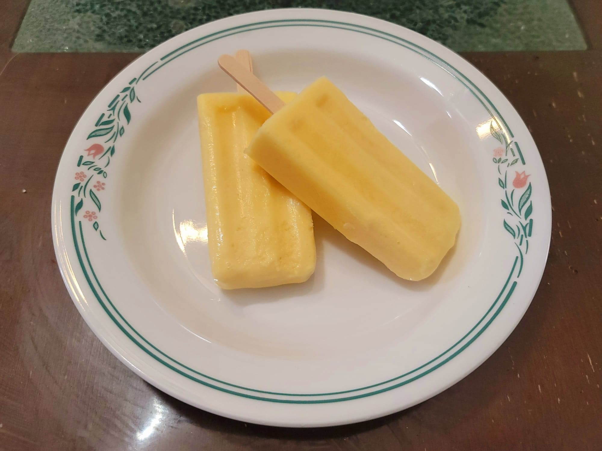

Creamsicles

Ingredients:
- 12 oz Frozen orange juice concentrate
- 2 cups Milk
- 1 cup Vanilla yogurt, or 1 cup Plain yogurt + 1 tbsp Sugar + 1/2 tsp Vanilla extract
- 1/4 cup Sugar
- 1 tbsp Vanilla extract
Instructions:
- Blend together all of the ingredients. Then transfer to popsicle molds. Let freeze for 8 hours or overnight. Serve cold.